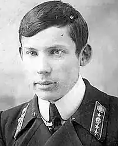
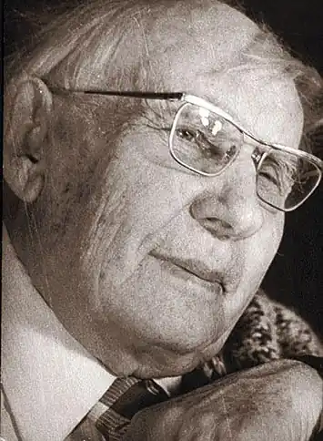

Олександр Мелентійович Волков (14 червня 1891, Усть-Каменогорськ, Російська імперія — 3 липня 1977, Москва, РРФСР) — російський радянський письменник, драматург, перекладач.
Олександр Волков народився 14 червня 1891 року в Усть-Каменогорську в сім'ї відставного фельдфебеля Мелентія Михайловича. У 1907 році вступив до Томський учительський інститут, після закінчення якого в 1910-му році (за спеціальністю — математик) працював учителем в Алтайському місті Коливань, а потім в Усть-Каменогорську, в училищі, де починав свою освіту. У 1920-х роках переїхав в Ярославль, де працював директором школи.
У 1929 році переїхав до Москви, де працював завідувачем навчальною частиною робітфаку. За сім місяців закінчив курс Московського університету. Після цього протягом двадцяти років, з моменту заснування, викладач, потім доцент кафедри вищої математики Московського інституту кольорових металів і золота. Друкуватися почав у 1917 році. В кінці 1930-х років вступив у велику літературу. Загальний наклад його творів, виданих на багатьох мовах світу, перевищив двадцять п'ять мільйонів примірників. У 1986 році знову забудованої вулиці м. Усть-Каменогорськ на Лівому Березі Іртиша присвоєно ім'я А. М. Волкова.